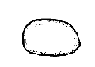
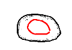
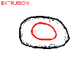
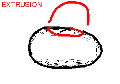
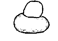
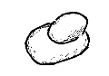
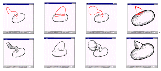

[1.Camera]
[2.Create]
[3.Paint]
[4.Extrude]
[5.Cut]
[6.Smooth]
[7.Bend]
[8.File]
Step 4: 突起生成
1
2
3
4
5
6
1) 物体を生成してください。
2) 物体表面にマウスの左ドラッグで閉じた線を描いてください。
(物体の外へ線がはみ出ないように注意してください。また、始点と終点をちょっとだけ離すときれいな結果が得られます。)
3) 閉じた赤い線が物体表面に描画され、
プログラムは突起生成モードに入ります。
4) 物体を回転して、赤い線が横にくるようにしてください。
5) 突起の形状をあらわすような線をマウスの左ドラッグで描いてください。
(物体表面の赤い線との間に少し間をあけてください。)
6) 物体を回転して様子を見てください。

突起生成操作の例
もし、突起生成せずに、閉じた線を物体表面に描きたい場合には、閉じた線を描いた後一度左クリックしてください。
十分練習できたら
step 5 へ
プログラムの動作がおかしくなったら、アプレットウィンドウを閉じて
Teddy を再スタート
してください。
Copyright (C) 1998
Takeo Igarashi